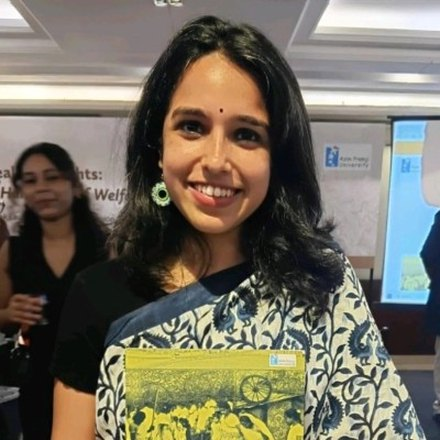

Padmini Ramesh
PhD Student, Department of SociologyJohns Hopkins University, Baltimore
I am a PhD student in Sociology at Johns Hopkins University. I study how the Indian state reaches rural citizens through land, welfare and data, and what changes for people when land records, cash transfers and welfare entitlements move onto digital systems. My earlier work includes a study of land records modernisation in Telangana, writing on digital welfare and citizenship, and reporting on rural jobs, women's self-help groups and village planning. I have done fieldwork in Telangana, Kerala, Jharkhand and North East India.
Before my PhD, I worked for five years in India's rural development sector. At Kudumbashree NRO, I helped write national guidelines for village-level planning and helped design the Village Poverty Reduction Plan app, now used across India. I worked with community workers in North East India covering about 50,000 women's self-help groups, and at The Nudge Institute I led a study on women's collectives among India's poorest households.
I hold an MA in Development Studies from the Tata Institute of Social Sciences, Mumbai, and a BA (Hons) in Business Economics from the University of Delhi.
- Agrarian change
- Political economy
- Welfare
- Digital governance
- Land governance
- Economic sociology
Education & scholarships
Fully funded PhD studentships offered, 2025
Career
- 2025–2026BaltimoreResearch AssistantDepartment of Sociology, Johns Hopkins University
- Research with Professor Monica Prasad on Supreme Court rulings on urban slum evictions in India.
- 2023–2025IndiaResearch Consultant and Senior AssociateThe Nudge Institute
- Designed and led a study on strengthening women's groups among the poorest households.
- Gathered lessons from Graduation Approach programmes across India.
- 2020–2022Kerala, North East IndiaThematic Anchor and Field CoordinatorKudumbashree NRO
- Helped write national guidelines for participatory rural development.
- Helped design the Village Poverty Reduction Plan app, now used across India.
- Worked with 58+ community workers covering about 50,000 self-help groups.
- 2020IndiaResearch ConsultantCentre for Land Governance
- Designed the research method for a study of the Model Land Leasing Act 2016, published in Land Use Policy.
From the field
Most of what I study, I first learned sitting on a tarpaulin in a village courtyard: in women's group meetings, in paddy fields, over shared lunches, and on long walks between hamlets.
- Telangana
- Kerala
- Jharkhand
- North East India
Publications
Journal articles, book chapters, policy reports, and writing for the public.
Journal articles & book chapters
- Clouding Citizenship: The Digital StateWith Rajendran Narayanan. Chapter in Realising Rights: A Handbook of Welfare in India, Azim Premji University2026About the book ↗
- Datafication and the Erosion of Citizenship RightsWith Rajendran Narayanan. The India Forum2026Read ↗
- Illegibly Legible: Outcomes of a Land Records Modernisation Programme in South IndiaWith R. Ramakumar. Journal of Agrarian Change, vol. 232023Read ↗
Policy reports
- Community Involvement in Managing Anganwadis in KeralaKudumbashree NRO, Government of Kerala and Government of India2022
- The State of Decentralised Solid Waste Management in Kerala Report, 2021Local Self Government Department, Government of Kerala2021
Media & op-eds
- Digital India का काला सच: क्या आपका डेटा आपसे बड़ा हो गया है?Video interview, Harkara2026Watch ↗
- When Work Became A Right: The Social Life of MGNREGABehanBoxAdded to the International Bibliography of Job Guarantee Programmes, Levy Economics Institute2026Read ↗
- How Panchayat Development Plans Often Miss Community VoicesIndiaSpend. Co-authorNominated, Laadli Media Awards, 20262025Read ↗
- Why Jharkhand's Parhaiyas Are Forced To Toil In Brick KilnsIndiaSpend, Scroll.in, India Development Review. Co-authorNominated, Ramnath Goenka Award, 20252024Read ↗
- 2022Read ↗
- Village Poverty Reduction Plan (documentary)Kudumbashree NRO. Co-producer2022Watch ↗
- How Women's Self-Help Groups Are Negotiating For Jobs, Power & SpaceIndiaSpend, also in Scroll.in2021Read ↗
- How Rural Jobs Scheme Can Be Improved To Help Returnee MigrantsIndiaSpend. Co-author2020Read ↗
- Why Cash Transfers Cannot Replace Structural Reforms In AgricultureIndiaSpend, also in Scroll.in2020Read ↗
Field Diaries
Photographs from fieldwork with women's collectives and farming households in rural India: the meetings, the fields, the homes and the long roads in between.
Talks & conferences
Conferences, panels and national trainings for government officials.
- May 2026Core Committee Member, Conference on the Future of Foreign AidCenter on Global Poverty, Johns Hopkins University
- Apr 2026Discussant, talk by Rupa Viswanath on caste violenceUniversity of Göttingen
- 2024Participant, Migration, Informality and DevelopmentIndian Institute for Human Settlements
- Jul 2023Invited Speaker, Land Tenures and Climate ActionCentre for Land Governance and Azim Premji University
- Jul 2022National Resource Person, Training on Participatory Rural PlanningMinistry of Rural Development, Government of India
- May 2022Invited Contributor, Localizing the SDGsMinistry of Panchayati Raj, Kerala Institute of Local Administration
- Mar 2022Participant, Building Sustainable Governance PrototypesPradan and Kudumbashree, Jharkhand
- Oct 2021Panelist, Land Rights and WomenSankalp Global Summit
CV
The full CV will be available to download here soon.
The PDF is on its way. Meanwhile, the home page covers education, scholarships and career, and Publications lists all written work.